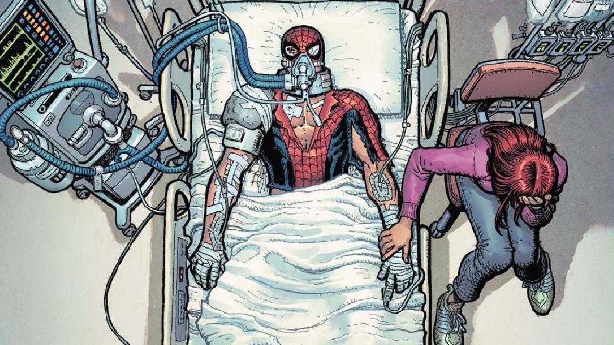
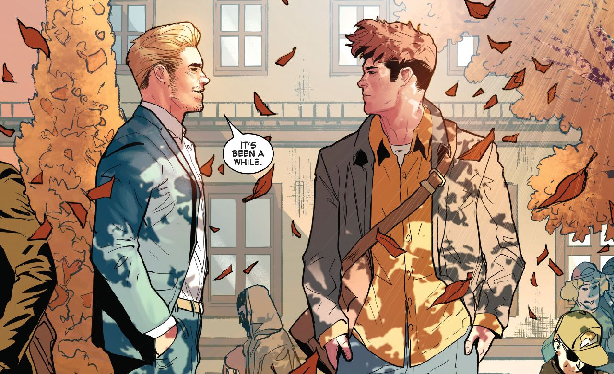

PETER PARKER CEDE EL MANTO DE SPIDER-MAN
El cómic girará en torno a la idea de que Mary Jane y Felicia nunca se han llevado especialmente bien, pero alguien a secuestrado a la Gata Negra y será Mary Jane quien tenga que salvarla.
La última semana ha estado llena de álgidos momentos para el Hombre Araña, uno de los personajes de Marvel que junto con Hulk y Venom recibe a un nuevo equipo creativo en su cabecera principal durante el mes de octubre.
De esta manera nos despedimos de Nick Spencer y su tediosa Saga de Kindred, y de la mano del guionista Zeb Wells y del ilustrador Patrick Gleason (dos miembros de un equipo mucho más grande) nos adentramos en Beyond: una nueva época en la vida de Spidey que ha comenzado apartando a Peter Parker del camino para centrar toda la atención en Ben Reilly, el clon favorito de los lectores marvelitas.

Hace algunos meses Marvel Comics anunció Beyond, la nueva etapa en la vida del Hombre Araña a cargo de los escritores Cody Ziglar, Kelly Thompson, Saladin Ahmed y Zeb Wells, y los ilustradores Ivan Fiorelli, Sara Pichelli y Patrick Gleason, una noticia que los lectores recibieron con bastantes expectativas. Pasado el tiempo podemos concluir que dichas esperanzas no han sido defraudadas, y en tan solo una semana este grupo de artistas nos han ofrecido un par de números en los que el status quo del personaje ha cambiado drásticamente.

De esta manera, en The Amazing Spider-Man 75 y 76 nos enfrentamos al hecho de que Spider-Man, como propiedad intelectual, ya no le pertenece a Peter Parker. El nombre del personaje está ahora en posesión de la corporación Beyond, y para darle un buen uso la compañía ha contratado a Ben Reilly, el infame clon de Peter, quien se encuentra utilizando el traje para pelear en contra los criminales de Nueva York.